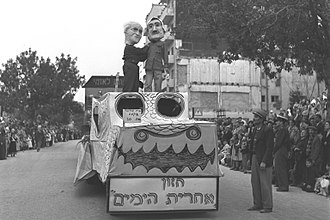
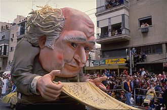

Moti sasson
T h e h i s t o r y o f t h e a d l o y a d a
 The first Adloyada parade was initiated by Avraham Aldema, a teacher and co-founder of "Hevre Trasek", and was held in Tel Aviv during Purim in 1912. This parade was characterized by provocative costumes and pranks. According to several testimonies, the parade of 1912 was very colorful and beautiful. It consisted of giant puppets, a marching band and hundreds of children wearing their Purim costumes. Throughout the years, the parade became a permanent tradition of Purim. These events were held parallel to the famous celebrations that were organized by Baruch Agadati. Agadati's merriments had become extremely profitable, and so were criticized harshly by "Hevre Trasek" for being over commercialized. Tel Aviv's Adloyadas were complemented with luxurious Purim balls, created by Baruch Agadati. Throughout the years, the parades were expanded and their path was moved from Herzl Street to Allenby Street and to Ibn Gabirol Street upon the establishment of the state of Israel. During the 1930s, every Adloyada had a specific theme, for example the tribes of Israel (in 1934), and the achievements of the Yishuv. During that time, Tel Aviv's Purim events attracted many tourists from all around Israel and from abroad. As opposed to European states, where carnivals were a means to break loose and consisted of extreme licentiousness, aggressiveness and protest,[citation needed] the Tel Aviv event had different features. The main carnival, despite its new name Adloyada, was characterized by a "proper" behavior. The municipality issued annual limitations on the Purim celebrations such as a prohibition to use explosives and dress up in costumes that may offend the Jewish religion or the Israeli nation. Despite the censorship and the sanctions, there were a few costumes and parades that didn't obey the rules and used the public festivity to express social protest, and thus made their mark on the city. During the 1928 carnival, with the theme "10 years to the national home", Hevre Trasek presented a 10-candle Menorah (as a symbol to Balfour's statement); instead of candles there was a rude gesture and the sign "free Aliya, Jews in the top clerical work". In one of the "Menorah" balls (Menorah was a club founded by veterans) in 1927, Avraham Atkind won the costume competition for his costume: "balancing the clerk's salary in the Palestine government". Atkind's hat had a scale and a photograph of the residence of the British commissioner in the magnificent Augusta Victoria building in Mount Scopus, as well as a poem, expressing the discontent of the gap between the British clerk's salary and the salaries of local Israelis from all ethnic groups. Gdud Meginei Hasafa (Hebrew: גדוד מגיני השפה, Battalion for the Defence of the Language), an organization in Tel Aviv fighting to make Hebrew the common language in Mandatory Palestine,[5][6] used Purim to present and to flood the streets with written propaganda. The Gdud documents were distributed during the Purim carnival. In addition, the Gdud held an annual costume competition with the theme of the superiority and importance of the Hebrew language. In the carnival of 1929, the Gdud presented the "tower of Babylon"; a tower on top of a horse-drawn cart with the slogan "revival of the language, revival of the people" and "words can kill". In the main carnival of 1933, there was a puppet of Hitler riding a horse, as part of the parade. On its neck there was a sign saying; "kill Jews" and next to it there were 2 Jews bleeding to death. The German consul in Jerusalem sent a letter to Tel Aviv Mayor Meir Dizengoff in the matter and demanded an apology, but Dizengoff replied that Purim is a stage for free speech of public opinion. A year later, a huge puppet was presented with a swastika on its back. In 1935, a giant puppet was built, named "the profiteering monster". On the day of festivities, a public trial was held for the puppet, during which Dizengoff, Menachem Ussishkin, Chaim Weizmann and Yehoshua Hankin ruled that the monster was guilty of various crimes including fraud, spending the people's wealth, and destruction of the achievements of the pioneers. In one of the later carnivals, a group of people dressed as Ku Klux Klan members in order to protest racism in the United States. While Purim festivals became central public events in the 1920s and 1930s for expressing current social issues, the holiday events, overall and despite exceptions, were aimed to strengthen national messages and dominant ideologies. As opposed to its Biblical origin, where Purim constitutes "an opposite world" (the fool becomes the king and the king is presented as a fool around town), in Tel Aviv the holiday was institutionalized to conserve the social hierarchy and the parades were led by the city's mayor Meir Dizengoff, astride a horse. During the Second World War, the Adloyada tradition was extinguished. The Adloyada tradition was renewed in the Purim of 1955. In the late sixties, the tradition disintegrated in Tel Aviv and the parade was transferred to Holon, although it lacked the unrefined feature of events in the small Tel Aviv. In the 80's an ArchiParhiTura (also spelled ArchiParchiTura; Hebrew: ארכיפרחיטורה) was introduced in Haifa. It was a Purim parade which had giant displays made by Technion architecture students ("ArchiParhiTura" is the Hebrew combination of the words architecture and "archi parhi"- which is the biblical expression of vagabond) and set on trucks. The parade went through Herzl Street in the Hadar Hacarmel area and was accompanied by an orchestra. In the last few years, an attempt was made to return to tradition and resume the Adloyada as an important main event in different cities. In the beginning, the parade was called "carnival". In 1923, a competition was held in order to find a new permanent name for the parade. Out of 300 submissions, author Isaac Dov Berkowitz's entry Adloyada was chosen. Adloyada means reaching a state of total intoxication. The expression comes from the Aramaic expression stated by Rabbah in the Babylonian Talmud, Tractate Megilla: "It is the duty of a man to mellow himself ... on Purim until he cannot tell the difference between 'cursed be Haman' and 'blessed be Mordecai'."[3] This means that people should drink on Purim until he reaches a state of not being able to distinguish between the evil Haman and the blessed Mordecai. Among the other submitted suggestions were Hayim Nahman Bialik's entry "Pura", Tchernichovsky's entry "Astoret" and Avraham Shlonsky's entry "Tzahalula".